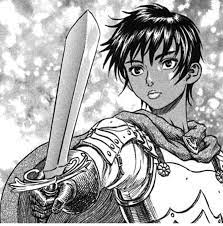
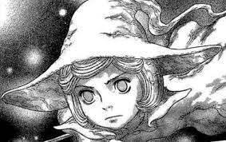
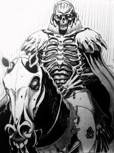

Aliases: The Black Swordsman, Struggler
Guts is the main character of Berserk. He has gone through many hardships in his life and seen more death and despair than anyone his age should. Even so, he struggles against fate itself to defeat the God hand and stop their vile evil from spreading. He wields a giant sword called the Dragonslayer "It was too big to be called a sword. Massive, thick, heavy, and far too rough. Indeed, it was a heap of raw iron."
CASCA
Aliases: Elaine, Big sis
|  |
Casca was a mercenary for the Band of the Hawk. She alongside Guts fought many battles and even participated in a 100 year old war. She is strong and a very capable fighter, being able to fight off multiple people at once, as well as a very respected leader when she led the Hawks for a year in their leader's absence. Unfortunately, the events that occured during the Eclipse changed her forever.
SCHIERKE
Aliases: None
|  |
Schierke is a young yet powerful witch. She was fostered by a powerful witch named Flora who is hundreds of years old. Flora trained her how to use advanced spirit magic at an early age making Schierke better at magic than most people. She serves as an emotional anchor to Guts and a source of astral knowledge for the party.
SKULL KNIGHT
Aliases: None
|  |
Skull Knight is an old warrior who wages battle against the Godhand. He is over 1000 years old and is incredibly realistic in his world views, acting very nihilistic at times too, and believes in causality and how everyone must follow their own fate. Despite this, he actively encourages Guts to struggle against his fate so that he may gain his revenge. He wields the Sword of Actuation, a weapon coated in molten behelits that can cut open time and space.